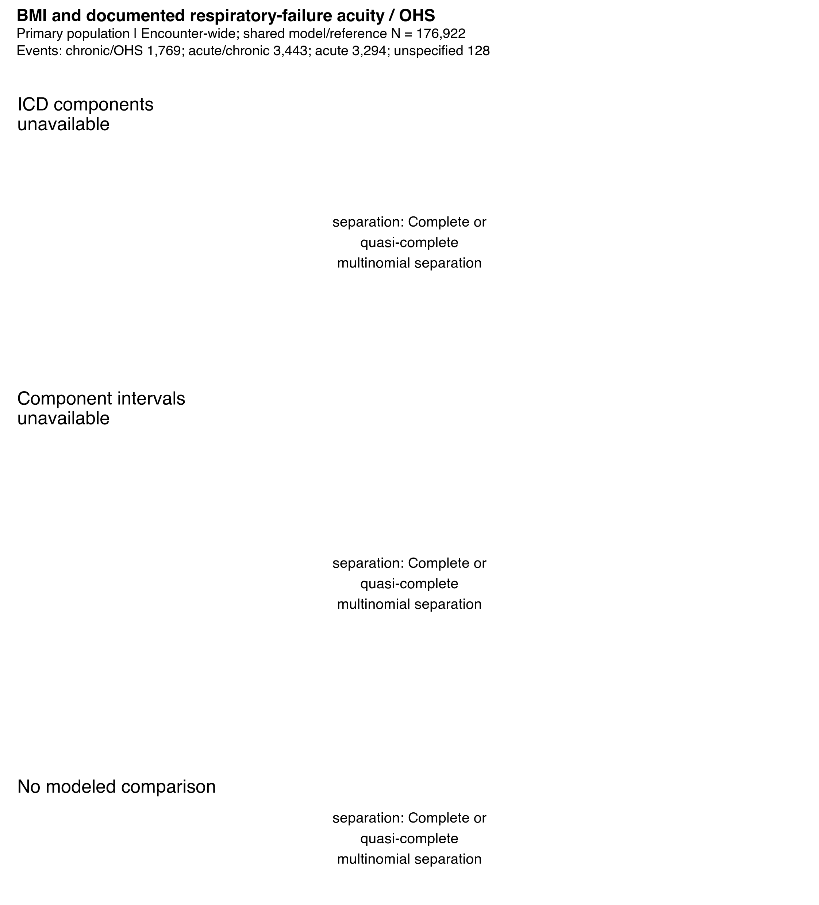

BMI and documented respiratory-failure acuity / OHS
Supplemental S2 is an unavailable-model display: separation prevented adjusted acuity curves. Source codes, fixed indexes and primary results are preserved. Investigator interpretation remains pending.

Adjusted ICD-acuity curves and intervals are unavailable: separation: Complete or quasi-complete multinomial separation This is a model-status display, not an estimated relationship. The accompanying table reports observed category counts only when source evidence is qualified. Primary fixed indexes, adjustment and existing analyses are unchanged; no fallback estimator was used.